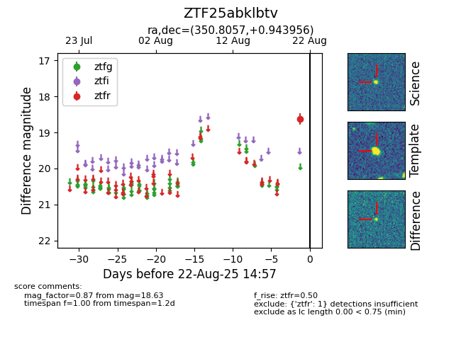

Target ZTF25abklbtv at 2025-08-22 15:46, see:
FINK: fink-portal.org/ZTF25abklbtv
Lasair: lasair-ztf.lsst.ac.uk/objects/ZTF25abklbtv
ALeRCE: alerce.online/object/ZTF25abklbtv
alt names
ZTF25abklbtv (ztf,alerce)
coordinates:
equatorial (ra, dec) = (350.8057,+0.94396)
galactic (l, b) = (82.2807,-54.80998)
photometry
last ztfr=18.63
1 ztfr detections
